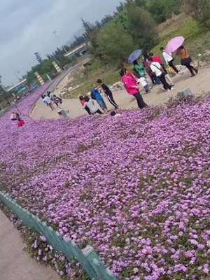

My family

我们家人一起出门旅游时拍的照片
我爸是一名勤劳务实，不怕吃苦的工人。他为人诚恳，待人和善，他经常教育子女也应如此。他常年在深圳打工，只有过年或者国庆节才会回家与我们团聚。家里面的经济来源基本上靠我爸了，他是家里的顶梁柱。我的生活费全是老爸的血汗钱交的！将来我有出息了，可一定要好好报答老爸呀！
这是我美丽的老妈，她平时爱笑，好强，什么都会做并且要做好。我妈炒的菜最好吃了，特别是家里有时候来客人了，总是满满的一大桌香喷喷的菜，以前上中学每天的早晚餐也是我妈亲自给我做的，我可喜欢了,现在上大学了，还挺怀恋我妈做的饭呢。除了炒菜做饭，我妈还喜欢跳舞和唱歌，别人都羡慕我妈的多才多艺！
这个看上去帅帅的，酷酷的男子是不是和我有点像呢？没错，他就是我的亲哥，刚好比我大10岁，现在可是深圳的一名出租车司机呢，对深圳那边的地形非常熟悉，车技也一流。想当初，我来上大学的时候就是我哥亲自开车将我送到学校来的呢。我哥现在已经成家了，有一位美丽的妻子，还有两个可爱的儿子！
这一位就是我漂亮的姐姐了，我哥的妻子。她人可好了，对我比亲姐姐还亲！平时都很关心我，还经常给我买衣服裤子，还有零食^_^我们都是吃货~~ 我姐也会炒菜做饭哟！现在也在深圳那边和我哥一起，在那边的一个公司里边上班。